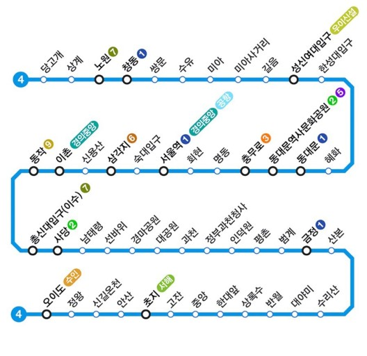

서울 지하철 4호선을 남측의 과천선과 안산선에 직결한 수도권 전철의 운행계통이다.
운영·관리 주체는 서울교통공사와 한국철도공사. 노선색은 하늘색에 가까운 파란색이다.
1994년 4월 1일 기존 4호선 서울시내 구간, 과천선, 안산선 3개 노선이 당고개~안산 직결 운행을 시작함으로서 현재의 수도권 4호선 통합 운행계통이 확립되었다. 남태령역부터 북쪽으로는 서울교통공사 구간, 선바위역부터 남쪽으로는 한국철도공사 구간이다. 서울교통공사 구간은 우측 통행, 한국철도공사 구간은 좌측 통행이다. 통행 방식이 다르기에 이들 두 역 사이에는 상하 입체교차 형식의 꽈배기굴이 위치한다.